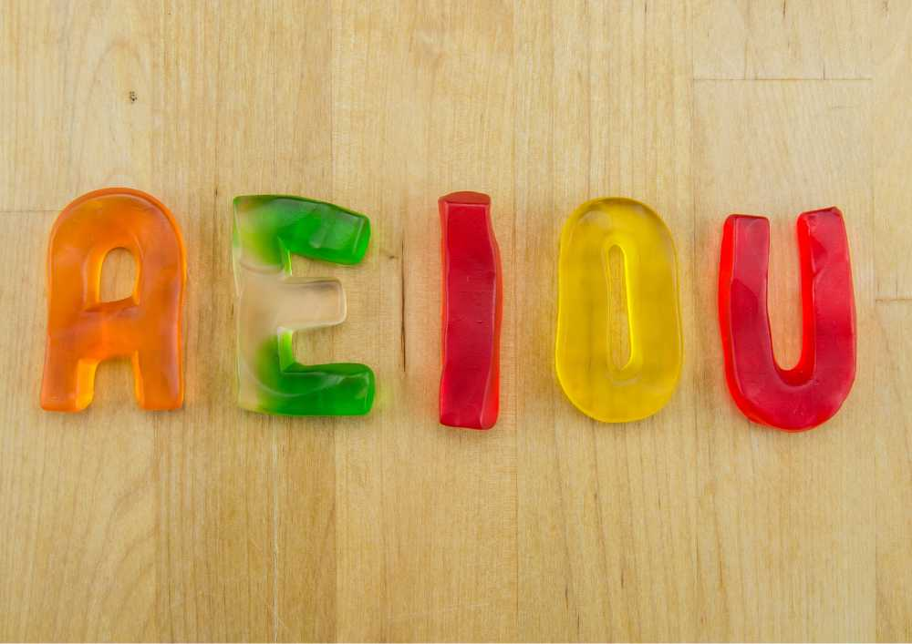

Vowels are the letters A, E, I, O, and U, and they have their own special sounds
that make them super important in every word we say.
Now, let's talk about short and long vowels. Short vowels are like sprinters – they
say their sounds quickly, like in the words 'cat,' 'met,' 'sit,' 'dot,' and 'rug.'
Long vowels, on the other hand, are like marathon runners – they stretch out
their sounds, like in the words 'cake,' 'meet,' 'kite,' 'rose,' and 'cube.'